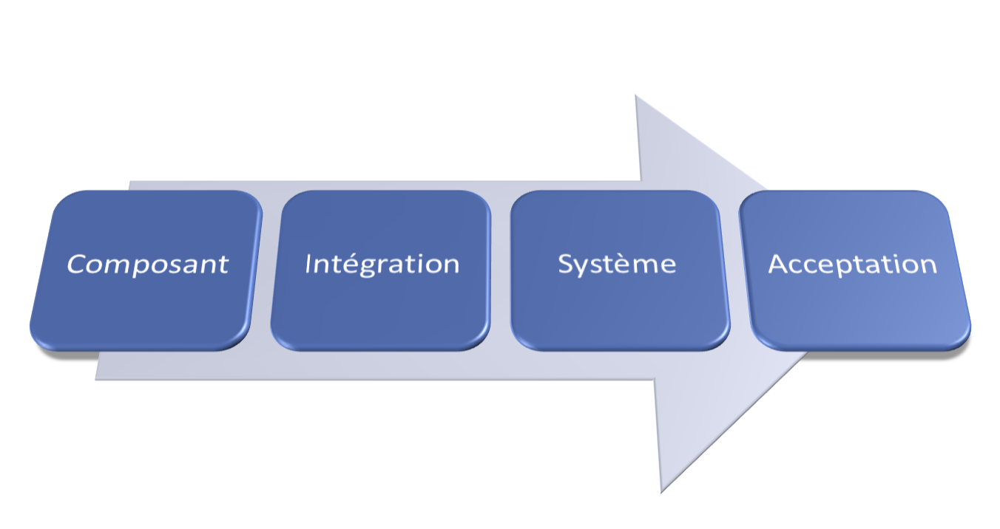
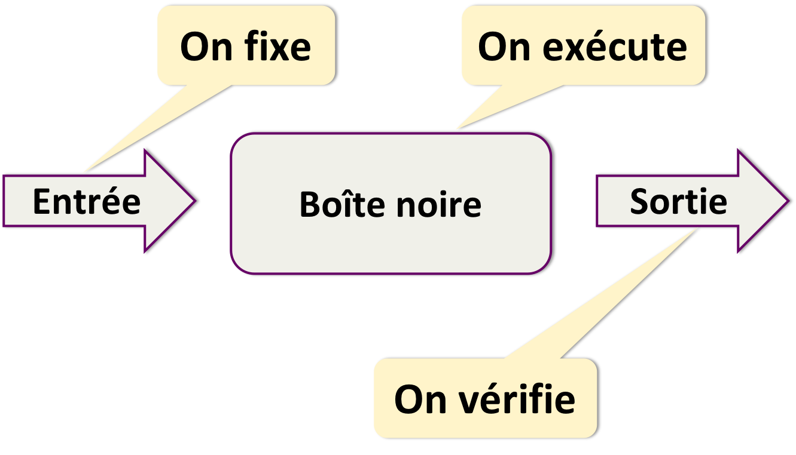
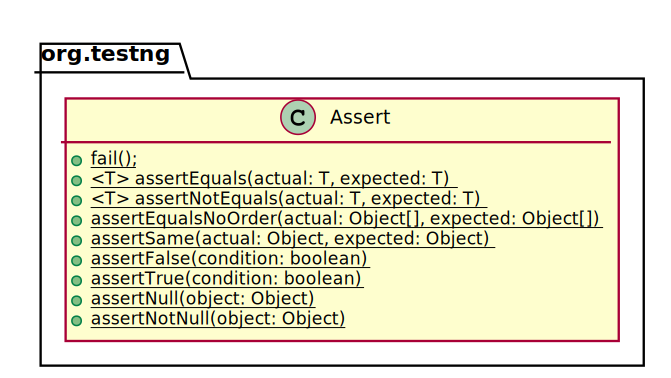
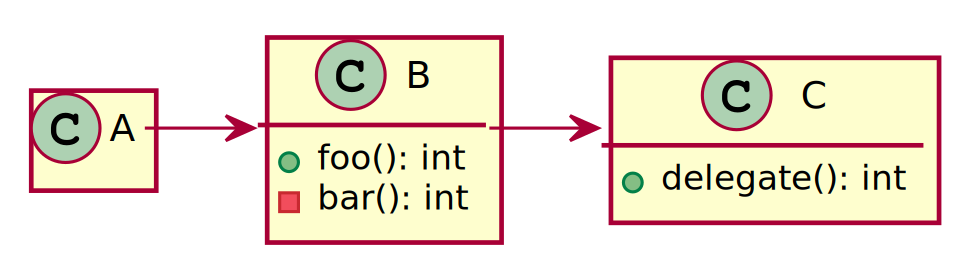
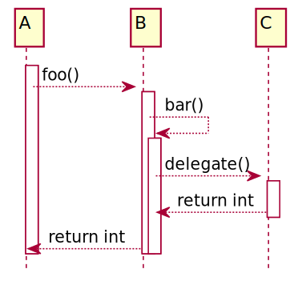
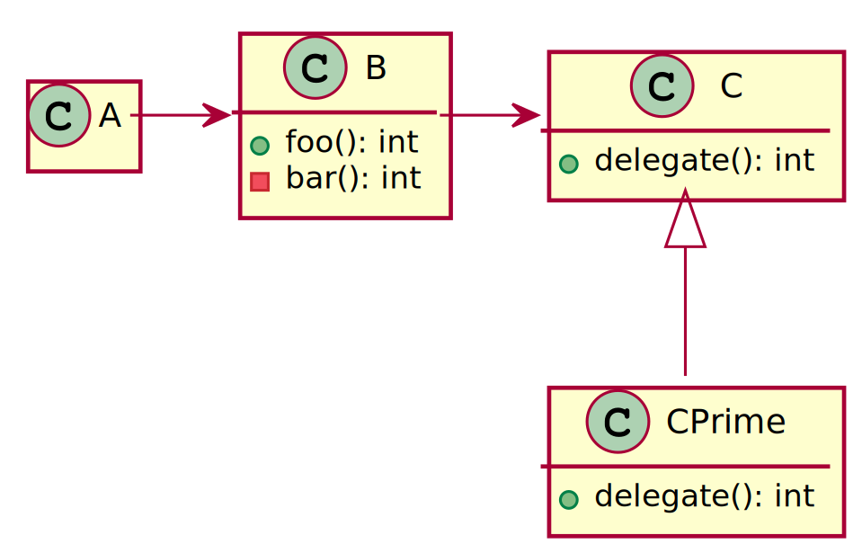
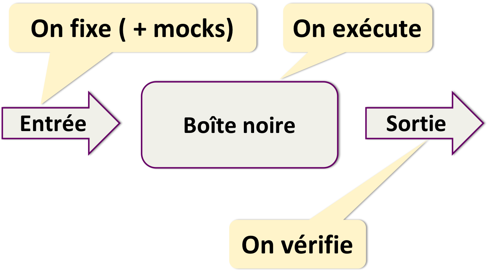
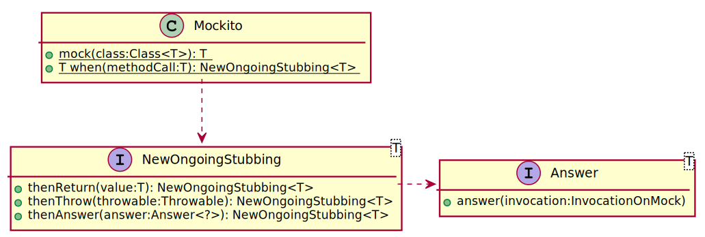
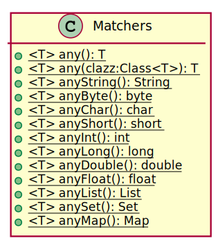

public class Math {
public int add(int i, int j) {
return i + j;
}
}Testing
Définition
Procédure de vérification partielle d’un système. Son objectif principal est d’identifier un nombre maximum de comportements problématiques du logiciel.
— Wikipédia
Comportements problématiques
Anomalies
Performance
Sécurité
Tests
Anomalie
Ecart entre les spécifications fonctionnelles et le comportement du logiciel
Types de test
Tests unitaires
Tests d’intégration
Tests end-to-end
Tests de performance
Tests de pénétration
Tests exploratoires
etc.
Grilles de lecture
Manuel/automatisé
Non-régression
etc.
Etapes de test

Test unitaire
En isolation
Généralement, l’unité est la méthode/classe
Une méthode (très) simple
Protocole de test

Exemple de test
Math m = new Math();
int r1 = m.add(1, 1);
if (r1 == 2) {
System.out.println("OK");
} else {
System.err.println("KO");
}
// etc.
int r2 = m.add(2, 1);
int r3 = m.add(3, 1);Problèmes du code précédent
Où le placer ?
Quand l’appeler ?
Comment l’automatiser ?
Frameworks de test
TestNG
@Testidentifie une méthode comme un testLancée par :
L’IDE
L’outil de build
(La ligne de commande)
Utilisation de TestNG
public class MathTest {
@Test
public void one_plus_one_should_equal_two() {
Math m = new Math();
int sum= m.add(1, 1);
if (sum == 2) {
System.out.println("OK");
} else {
System.err.println("KO");
}
}
}Problème du code précédent
Ecrire dans la log ?
Et devoir la lire à chaque fois ?
Plutôt échouer le test !
Utilisation de fail()
public class MathTest {
@Test
public void one_plus_one_should_equal_two() {
Math m = new Math();
int sum= m.add(1, 1);
if (sum == 2) {
System.out.println("OK");
} else {
fail("KO");
}
}
}Echouer le build

Méthodes d’assertion
Lancent une
AssertionError(gérée par TestNG)fail()→ à chaque invocationassertXXX()→ si l’évaluation échoue
Réécriture avec les assertions
import static org.testng.Assert.assertEquals;
public static class MathTest {
@Test
public void one_plus_one_should_equal_two() {
Math m = new Math();
int sum = m.add(1, 1);
assertEquals(sum, 2);
}
}Trop simple ?
Un seul test ne suffit pas à valider le comportement
Plus de tests
public class MathTest {
@Test
public void one_plus_one_should_equal_two() { ... }
@Test
public void one_plus_two_should_equal_three() { ... }
@Test
public void three_plus_two_should_equal_five() { ... }
}DRY : Initialisation et nettoyage
Avant | Après | |
Méthode de test |
|
|
Classe |
|
|
etc. |
|
|
public class MathTest {
private Math m;
@BeforeMethod
public void setUp() {
m = new Math();
}
@Test
public void one_plus_one_should_equal_two() { ... }
@Test
public void one_plus_two_should_equal_three() { ... }
@Test
public void three_plus_two_should_equal_five() { ... }
}DRY : Fournisseurs de données
Même méthode de test et paramètres différents
@DataProviderMéthode qui renvoie
Object[][]
Param 1 | Param 2 | Valeur de retour | |
Méthode 1 | 1 | 1 | 2 |
Méthode 2 | 1 | 2 | 3 |
Méthode 3 | 3 | 2 | 5 |
public class MathTest {
private Math m;
@BeforeMethod
public void setUp() {
m = new Math();
}
@DataProvider(name = "data")
public Object[][] data() {
Object[][] data = new Object[3][3];
data[0] = new Object[] { 1, 1, 2 };
data[1] = new Object[] { 1, 2, 3 };
data[2] = new Object[] { 3, 2, 5 };
return data;
}
@Test(dataProvider = "data")
public void add_should_add(int i, int j, int k) {
int sum = m.add(i, j);
Assert.assertEquals(k, sum);
}
}De meilleures assertions
Les assertions TestNG sont limitées
Plus d’options avec :
Assertions avec TestNG
File xFile = ...;
assertTrue(xFile.exists());
assertTrue(xFile.isFile());
assertNotEquals(xFile.getAbsolutePath(), xFile.getPath());Assertions avec AssertJ
assertThat(xFile)
.exists()
.isFile()
.isRelative();
assertThat(contentOf(xFile))
.startsWith("The Truth")
.contains("Is Out")
.endsWith("There");Tester les exceptions
public class MathTest {
@Test
public void one_divide_0_should_fail() {
try {
new Math().divide(1, 0);
fail("Division par 0 est interdite");
} catch (ArithmeticException e) {
// Ca marche !
}
}
}Tester les exceptions avec TestNG
@Test(expectedExceptions = Exception.class)
public class MathTest {
@Test(expectedExceptions = ArithmeticException.class)
public void one_divide_0_should_fail() {
new Math().divide(1, 0);
}
}Toujours trop simple ?
Le cas précédent existe rarement
Aucune dépendance envers d’autres classes
Pour isoler
Injection de dépendances
Pas de méthodes statiques
Test-Driven Development
Un simple diagramme de classes

Tentative de conception

public class B {
private C c = new C();
public int foo() {
int bar = bar();
return c.delegate(bar);
}
private int bar() { ... }
}Une autre tentative

public class B {
private C c;
public B(C c) {
this.c = c;
}
public int foo() {
int bar = bar();
return c.delegate(bar);
}
private int bar() { ... }
}Possibilité de conception

Mock
Les mocks sont des objets "pré-programmés" avec un comportement connu
Rappel du protocole de test

Standard "de fait"
Fonctionnalités de Mockito
Création de mocks
Implémentation de comportement de mocks
Vérification d’interaction avec les mocks
Et d’autres…

Création de mocks
List list = Mockito.mock(List.class)ou
public class Test {
@Mock
private List list;
@BeforeMethod
protected void setUp() {
MockitoAnnotations.initMocks(this);
}
}Implémentation du comportement
when(list.get(0)).thenReturn("Zero");
when(list.get(1)).thenReturn("Un");
when(list.get(2)).thenThrow(new IndexOutOfBoundsException());Arguments génériques

when(list.get(anyInt())).thenReturn("A value");Vérification d’interactions
Un cas d’utilisation : cache
Scénario : comment tester ?

Comment tester le cache ?
En vérifiant qu’il n’y a pas d’interactions avec le DAO
Couverture de tests
Taux de code testé
Nombre de lignes exécutées durant les tests
(Ou de branchements)
Utilise JaCoCo
Très limitée
Couverture de mutations
Vérifie la pertinence des tests
Mockito est limité a dessein
Pas de méthodes privées
Pas de méthodes statiques
Tester un code intestable
Mettre en place PowerMock
Réaliser les tests
Refactorer le code
Refactorer les tests pour supprimer PowerMock